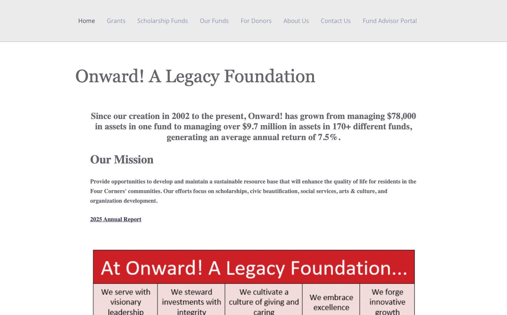
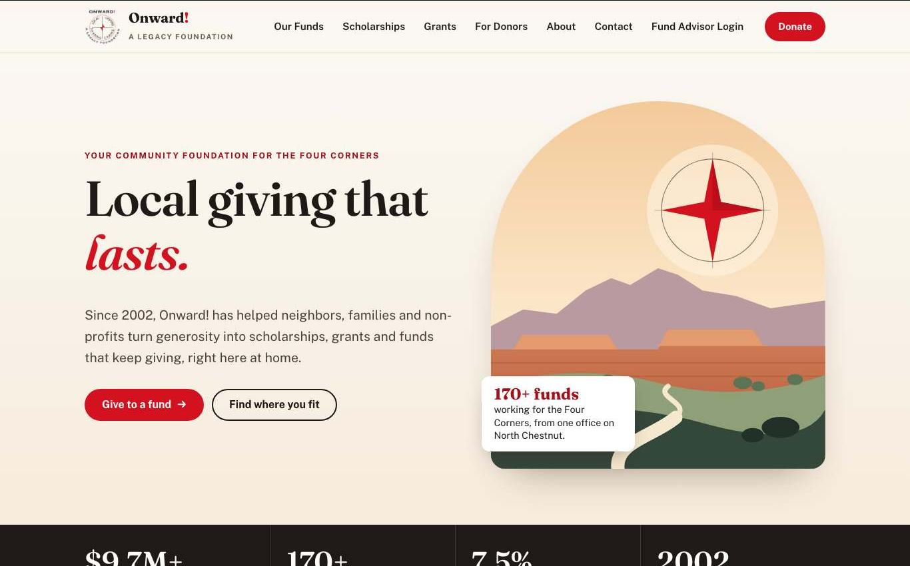

The whole proposal in one minute
Williams Digital will redesign onwardfoundation.org on WordPress, move your website and email off Turbify without interrupting your mail, and train your staff to run it, for the $5,000 the board has budgeted.
The concept linked here is already built with Onward!’s own words, funds, scholarships and photographs. It includes a searchable directory of 105 funds, a scholarship finder, a one-form application demo and a private board area. Please click through it on a phone.
See it before you decide
Every page below is live and clickable. It is a design concept, so forms do not send and nothing replaces your current site.


- Home pageFive clear paths: give, start a fund, scholarships, grants, fiscal sponsorship
- Our Funds105 funds, searchable and filterable by type
- ScholarshipsFinder by school and field, plus a one-form application demo
- GrantsCycle dates that update themselves, criteria, documents, awardees
- Board & staff portalPrivate area demo. Password: onward2026
- Contact & newsletterRouted contact form and Mailchimp sign-up
The landscape illustration and icons were drawn for this concept as an example of the illustration work in the scope. Photographs are Onward!’s own, from the current site.
We read all 66 pages of the current site
These are the things a redesign should fix, and the things worth keeping.
Agency, donor advised, endowment, fiscal and specific interest funds are each on their own page with no guide to which one a visitor needs. The concept leads with who the visitor is.
The Fiscal Projects page lists 56 projects on a single page. Adding one means editing that page. In the redesign each fund is its own short entry, and the lists build themselves.
Most scholarships need a general application plus a separate form for each scholarship. One form with a checklist of scholarships removes the repeat work for students and staff.
Page addresses are numbers such as ?page_id=134, and the sitemap file dates from March 2018 and lists pages that no longer exist. Readable addresses and redirects fix this.
The home page opens with large blocks of bold text and a cookie notice across the bottom of the screen. News posts stop in 2021 and the events calendar is empty.
All three sit with Turbify, which is why moving the website feels risky. We separate them first, so the website can move without touching email.
Your applications already run on Gravity Forms, with file uploads and save-and-continue. We restyle and reorganize them instead of rebuilding from zero.
The Donate and Fund Advisor Login links to your accounting system stay exactly as they are, and become visible on every page.
Everything in your RFP, and how we deliver it
| You asked for | What you get |
|---|---|
| Content strategy | A reorganized sitemap built around five audiences (donors, fund starters, students, non-profits, community projects). Your current sitemap is the starting point, with changes agreed before design begins. |
| Copywriting | Home, fund types, giving, scholarships, grants, fiscal sponsorship and about pages rewritten in plain language from your existing content and a one-hour interview. Fund and scholarship descriptions are carried over and lightly edited. |
| Illustration & information design | A Four Corners landscape illustration, an icon set, and diagrams for “which fund is right for me” and the grant cycle. |
| Visual design | A design system in Onward!’s red and black: type, color, buttons, cards and page templates, using your photographs. |
| Front-end & back-end coding | A lightweight custom WordPress theme. Funds and scholarships become structured entries, so staff fill in a short form and the directory, filters and counts update on their own. |
| Forms | Scholarship, grant, fiscal project, board update and contact forms reorganized in Gravity Forms, including the combined scholarship application. |
| Password-protected section | A board and staff area with individual logins, hidden from menus, search and search engines, for announcements, meeting packets and documents. |
| Integrations | Donate and Fund Advisor Login links to your accounting system on every page. Newsletter sign-up connected to your existing Mailchimp account. |
| Search engine optimization | Readable page addresses, redirects from every old address, page titles and descriptions, a current sitemap, image descriptions, and Google Search Console set up in Onward!’s name. |
| Mobile optimization | Designed for phones first and tested on real iPhone and Android browsers. See section 08. |
| Accessibility | Built to WCAG 2.1 AA: readable contrast, keyboard access, labeled forms. Your RFP page asks for an accessible site, so this is included rather than optional. |
| Hosting move | Website and email moved off Turbify with a staged plan. See section 05. |
| Staff training | Two recorded video sessions and a written guide with screenshots: adding a fund, opening and closing an application, posting news, updating the board area. |
Not included: new photography, a logo redesign, and changes inside your accounting system or Mailchimp account beyond connecting them.
Moving off Turbify without losing a single email
You said email cannot go down. So the website and the email move on different days, and the old mailboxes stay switched on until the new ones are proven.
- InventoryWe list every mailbox, alias and forwarder with your staff. You mentioned 1,000 is more than you need, so this is also where the right number is decided.
- Take control of the domain settingsThe domain’s settings are copied, record for record, to an independent service. Nothing changes for anyone, but from this point the website and the email can move separately.
- Build the new mailboxes and copy the mail acrossNew mailboxes are created and existing mail is copied in the background while everyone keeps working in the old ones.
- Switch email on a Friday eveningNew mail starts arriving in the new mailboxes. A final copy picks up anything received during the switch. Staff get a one-page sign-in sheet and we are on call Monday morning.
- Protect your sending reputationThe records that tell other mail systems your messages are genuine (SPF, DKIM and DMARC) are set up, so grant and scholarship emails reach inboxes.
- Launch the website on its own dayThe new site goes live separately. If anything is off, it can be pointed back within minutes without affecting email.
- Keep Turbify for 30 days, then cancelThe old account stays as a fallback until everyone confirms nothing is missing.
What it will cost each year
| Item | Recommended | Estimated per year |
|---|---|---|
| Google Workspace for Nonprofits, or Microsoft 365 for nonprofits if staff prefer OutlookBoth offer no-cost plans to eligible 501(c)(3) organizations. We handle the application. | $0 | |
| Website hosting | Managed WordPress hosting with daily backups, a security certificate and a private test copy of the site | $180 to $300 |
| Domain registration | onwardfoundation.org, kept in Onward!’s own name | About $20 |
| Estimated total, against about $400 today | $200 to $320 | |
These are estimates. Exact quotes, and confirmation of nonprofit eligibility, are delivered in week one before anything is purchased. Every account is opened in Onward!’s name and paid by Onward! directly, so you are never dependent on us for access.
Live before the end of the year
This schedule assumes a decision by Friday, October 23. If the decision comes later, each date moves by the same number of days. The concept already built shortens the design phase.
| When | Milestone | Major tasks |
|---|---|---|
| Oct 26 to Nov 6Weeks 1 and 2 | Kickoff and content plan | Kickoff call. Staff interview. Final sitemap. Mailbox inventory. Hosting and email quotes. Domain settings moved to independent control.You approve: sitemap and hosting choice. |
| Nov 9 to Nov 20Weeks 3 and 4 | Design and copy | Concept refined into final designs for every page type. Rewritten copy delivered for review. Illustration and icon set completed.You approve: design and copy, with two rounds of revisions. |
| Nov 23 to Dec 4Weeks 5 and 6 | Build | WordPress theme built on a private test copy. Funds and scholarships loaded as entries. Forms reorganized. Board area set up. Email switched on Friday, December 4. |
| Dec 7 to Dec 11Week 7 | Review and training | Staff review on the test copy. Phone, tablet and accessibility testing. Redirects from old addresses. Two recorded training sessions.You approve: launch. |
| Dec 14 to Dec 18Week 8 | Launch | New site goes live. Search Console and sitemap submitted. Scholarship forms tested end to end before they open January 1. |
| Through Jan 18 | 30 days of support | Fixes, questions and small adjustments at no charge. Turbify account cancelled once everything is confirmed. |
One point of contact, feedback within three business days at each approval, administrator access to WordPress and Turbify, and a one-hour interview in week one.
Project budget by line item
| Line item | Cost |
|---|---|
| Discovery, content strategy and sitemapKickoff, staff interview, content audit of all 66 pages, final sitemap | $500 |
| Copywriting and content migrationCore pages rewritten; fund, scholarship and document content moved and tidied | $700 |
| Visual design, illustration and information designDesign system, page designs, illustration, icons, diagrams | $900 |
| WordPress development, front end and back endCustom theme, fund and scholarship entries, directory, finder, responsive build, accessibility | $1,200 |
| Forms and applicationsCombined scholarship application, grant, fiscal project, board update and contact forms | $500 |
| Password-protected board and staff area | $250 |
| IntegrationsDonation and fund advisor links, Mailchimp sign-up | $150 |
| Search engine optimizationReadable addresses, redirects, titles and descriptions, sitemap, Search Console | $250 |
| Hosting and email migrationInventory, domain settings, mailbox move, website move, 30-day fallback | $350 |
| Staff training and 30 days of supportTwo recorded sessions, written guide, post-launch fixes | $200 |
| Total, fixed price | $5,000 |
Payment
50% ($2,500) at kickoff and 50% ($2,500) at launch. Ongoing hosting is paid by Onward! directly to the providers and is not part of this total, as your RFP specifies.
After launch
Nothing further is required: the site is built for your staff to run. If you would like someone on call for updates and security patches, an optional care plan is $50 a month and can be cancelled at any time.
Designed on a phone first
A student checking a deadline or a donor following a link from Facebook will most likely be on a phone. Each page is designed at phone width first, then widened for tablets and desktops.
- Layouts that reflow, not shrink. Card grids become swipe rows, tables become stacked cards, and the menu becomes a single clearly labeled Menu button.
- Thumb-sized targets. Every button and link is at least 44 pixels tall.
- Forms that work on a phone. Large fields, the right keyboard for email and phone numbers, and saved progress so a long application can be finished later.
- Fast on a rural connection. Compressed images that load as you scroll, no heavy page-builder code, and a target of under two seconds to first view on 4G.
- Tested on real browsers. iPhone Safari, Android Chrome, a small 320-pixel screen, tablet and desktop, with a written checklist per page.
- Readable by everyone. WCAG 2.1 AA contrast, text that can be enlarged to 200%, and full keyboard and screen reader access.
- One donate button always in reach. On phones a single bar with Donate and Contact stays at the bottom of the screen.
- Staff can preview before publishing. WordPress shows the phone view of any page before it goes live.
The concept site already follows this plan. Open it on your own phone to check.
Examples of similarly complex work
Each of these is live and shares something specific with your project: staff who publish for themselves, online applications, a document library, or a private area.
Vestlake Communities at Liberty Park
The official website for a homeowners association in Vestavia Hills, Alabama: events calendar, newsletter archive, a document library for bylaws, minutes and financials, and an admin the management team runs themselves.
Why it is relevant: a board-governed organization whose staff publish without technical help. vestlakelibertypark.com
Buy Auburn
A national directory of Auburn-owned businesses. Businesses apply online, an administrator approves them from a dashboard, and listings are searchable by state, city and industry.
Why it is relevant: online applications with a review step, and a searchable directory like your funds list. buyauburn.com
WeAddALogo
An embroidery and printing shop in Leeds, Alabama. The owner adds, hides and reprices her own products, and larger jobs come in through a custom-order form with file upload.
Why it is relevant: a non-technical owner maintaining her own site, and forms with file uploads. weaddalogo.com
Vardar Transportation
A Birmingham transportation company. Every booking request lands in a private owner dashboard where it can be accepted or declined, with email alerts to the owners.
Why it is relevant: public forms feeding a private, signed-in area. vardartransportation.com
A note on platform: these four sites are hand-coded rather than WordPress, because that suited those clients. Your site will be WordPress, as your RFP specifies, built as a standard theme that any WordPress developer could take over.
References from previous clients
Three clients whose projects are closest to yours. A contact name, email and phone number for each is in the email that accompanied this proposal.